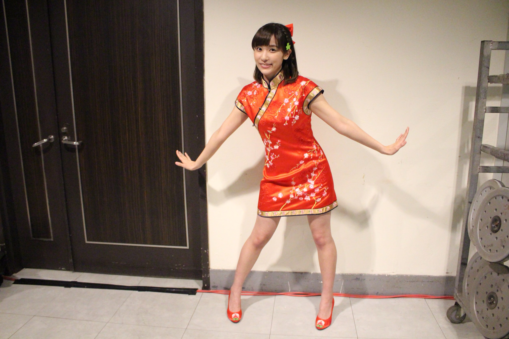
人物介紹
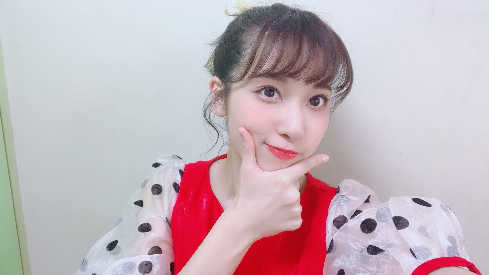
伊波杏樹（1996年2月7日－）綽號：あんちゃん、ㄤ醬。日本的女性聲優、歌手。東京都出身，血型O型，經紀公司為Sony Music Artists。畢業於代代木動畫學院。
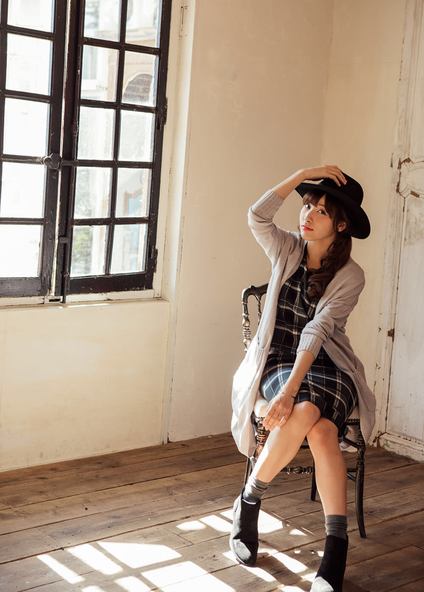
在舞台劇方面很活躍，於2015年的舞台劇《火影忍者》中出演山中井野。很喜歡舞台劇這份工作，認為舞台劇的演出經驗和聲優的工作息息相關，兩者相輔相成。2012年Sony Music Artists主辦的（第二回）動畫愛好者限定「アニストテレス」受賞。 2013年出演《大正浪漫探偵譚》相馬秋乃一角，是舞台劇的出道作。 2013年在劇場動畫《陽光中的青時雨》中出演主人公日向作為聲優出道。 2015年在LoveLive!系列的新企劃LoveLive!Sunshine!!當中，擔當高海千歌的聲優。
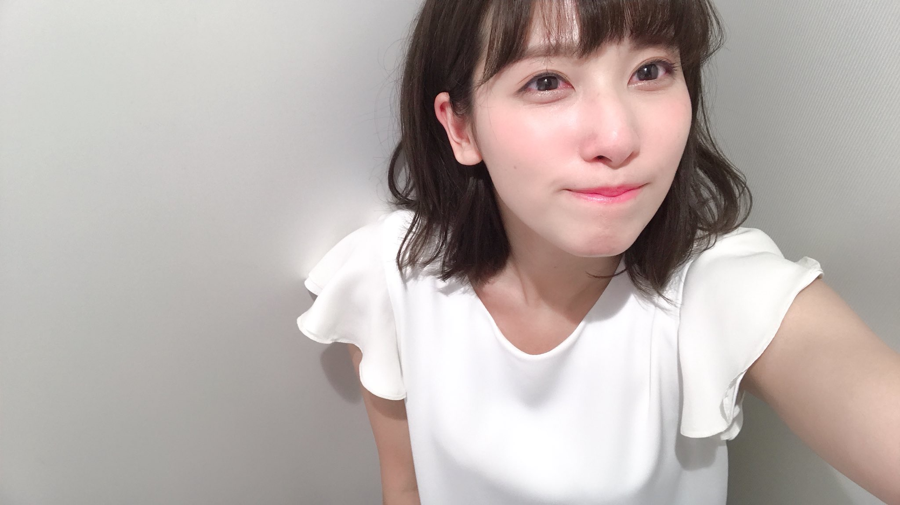
和爸爸的關係非常要好（是個爸寶），經常一起打遊戲，一起開車出去玩。 憧憬的聲優為平野綾。家中有養一隻名為チャイくん的臘腸狗。 本身在出演LoveLive! Sunshine!!前就非常喜歡LoveLive，並從Twitter上能夠得知喜歡的角色為小泉花陽。
個性
是個很容易害羞，不管做什麼都全力以赴的人，同時也是個說到做到的人（在個人的廣播節目“奇思妙想廣播劇”內吃過甘露煮蝗蟲和蠶蛹）
座右銘是：「日々精进」，她認為這是活著最重要的一件事情。（非常的帥氣）
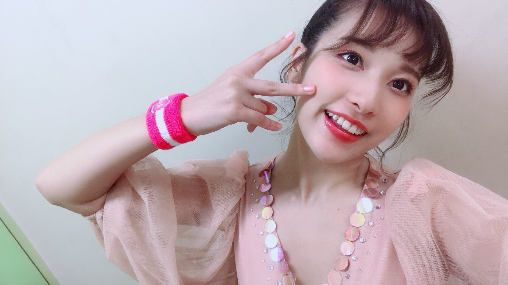
興趣愛好是電影鑑賞、唱歌和一個人逛水族館，沒事的話會在一個水槽前看一個多小時再去下一個水槽前看一個多小時。最喜歡的前三種動物是水母、烏賊、鯊魚（喜歡水母是覺得看著它們會有種心無雜念的感覺；喜歡烏賊是因為它們的遊動方式和偶爾體現出的捕食性；喜歡鯊魚是因為強大感。喜歡水族館喜歡到也曾在廣播節目中提到假如中一億元的話想在家裡蓋水族館。
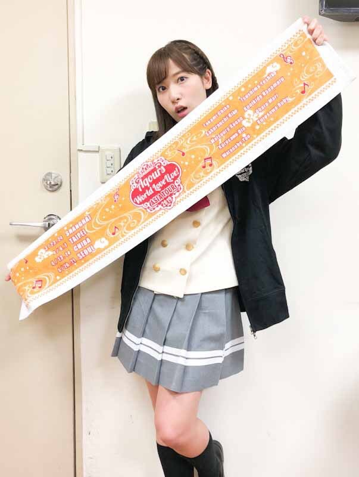
喜歡LUSH（化妝品品牌）和去星巴克。特長是唱歌和空手道。國中時期因為覺得嗓音非常柔弱，不太喜歡自己的聲音，害怕自己的聲音被嘲笑，漸漸地產生了自我厭惡的時候受人邀請，抱持著「不想被小看」的心情開始練習空手道，按部就班地練了三年變得非常厲害，特技為（蜜柑）迴旋踢，經常被別人說很強。
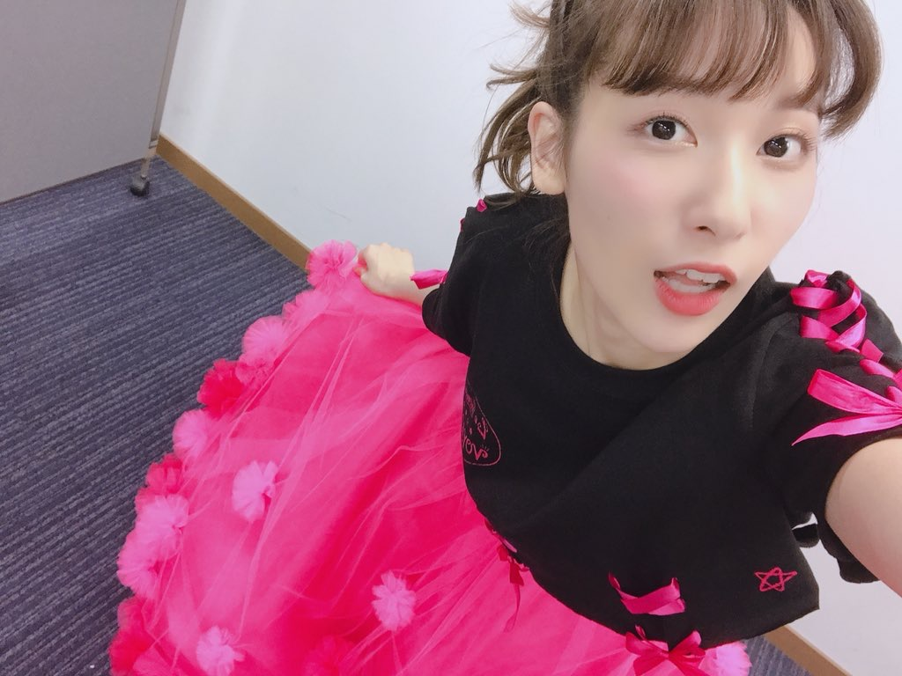
很喜歡玩遊戲，種類豐富很豐富（《馬力歐系列》、FCM、SFC、PM、賽車類、街機遊戲、《怪物獵人》等。）
經常被別人說但是卻完全沒有自覺的吐槽役，甚至認為自己比起吐槽役更偏向於裝傻役。
作品
電視動畫
2016
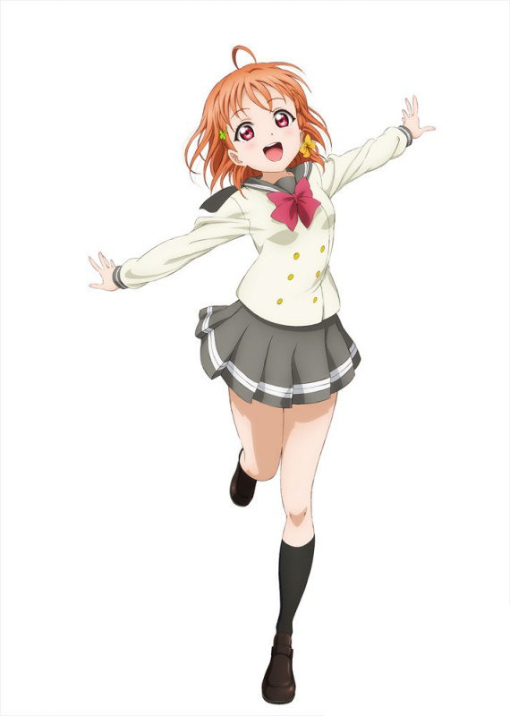
LoveLive! Sunshine!!（高海千歌）
2017
LoveLive! Sunshine!! 第二季（高海千歌）
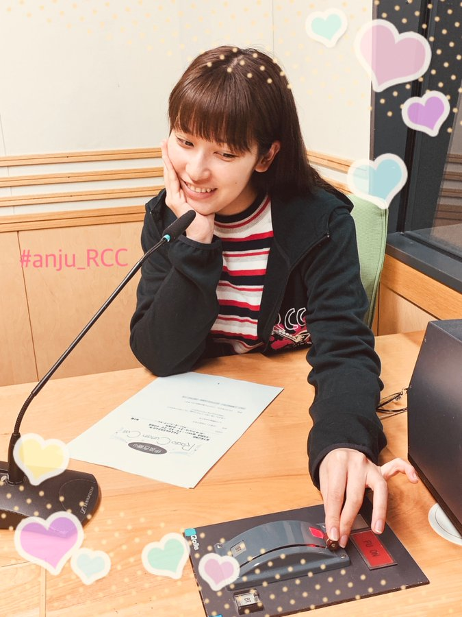
動畫同好會（青山繪里香）
音樂專輯
2018年4月17日 0.5單Cover曲合集單曲 NamiotO vol 0.5 〜cover collection〜
舞台劇
2013
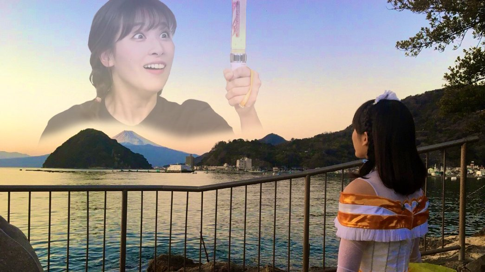
はっぴぃはっぴぃどりーみんぐ Vol.3 舞台大正浪漫偵探譚（相馬秋乃）
2015
ライブ・スペクタクル NARUTO -ナルト-（山中井野）庭球社～先輩とめぐりあう時間たち～（押本百合）
超級槍彈辯駁2 THE STAGE ～再會了絕望學園～（澪田唯吹）
2016
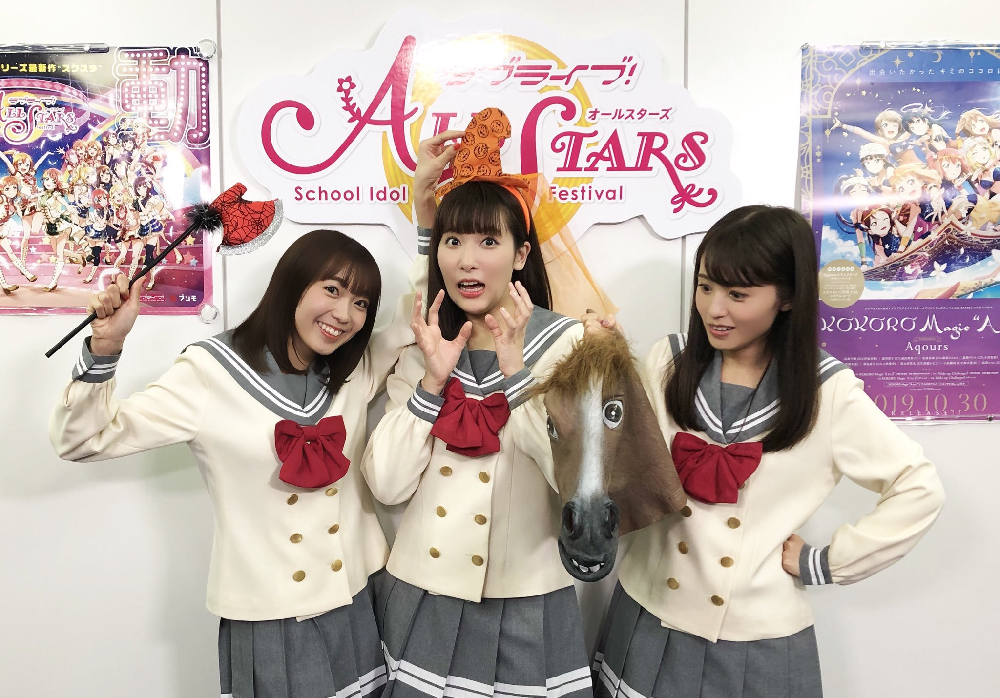
JYUKAI-DEN -桃源-（花林）舞台版 地獄少女（武田裡奈）
Live Fantasy FAIRY TAIL（安潔兒）
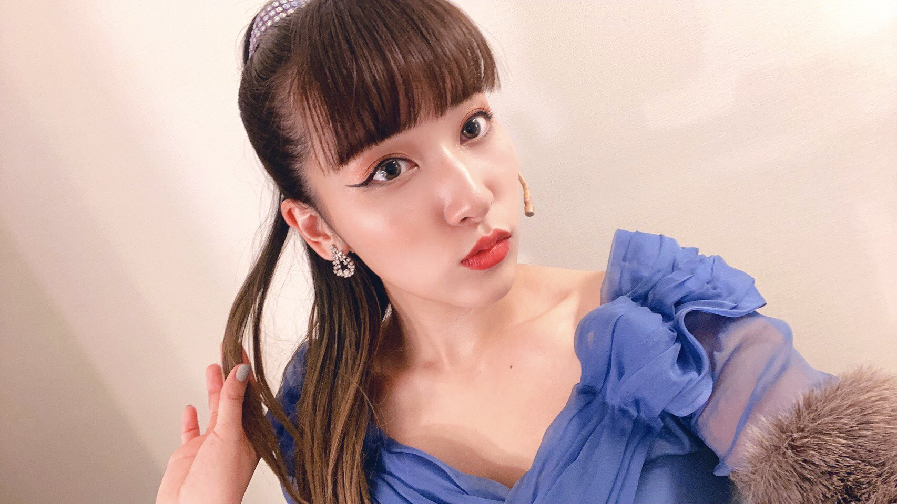
2017
超級槍彈辯駁2 THE STAGE ～再會了絕望學園～ 2017（澪田唯吹）Black Dice（臼田芽衣（咲子））
2019
舞台 銀河鐵道999 再見了梅德爾～我的永遠（梅德爾）LOVE'S LABOUR'S LOST（凱薩琳）